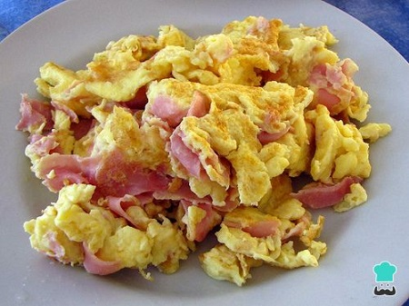

Volver atrás
RESTAURANTE JAMONES
Huevos revueltos con jamón

Algo fácil y rápido que cualquier miembro de la familia puede preparar
Descargue esta receta en pdf
Ingredientes
2 Piezas de huevo entero (100 g)
4 Rebanadas de jamón San Rafael balance (88 g)
2 Disparos de un segundo de spray para cocinar Pam (2 g)
1/4 Taza picada de cebolla (40 g)
1/2 Taza de claras de huevo San Juan (122 g)
Cómo hacer huevos revueltos con jamón
Picar jamón en cuadros y la cebolla
Cocinar el jamón y la cebolla aplicando al sartén 2 disparo de Pam
Dejar caer lo huevos y las claras y revolver los ingredientes en el sartén
Una vez que la consistencia sea de tu agrado servir en el plato